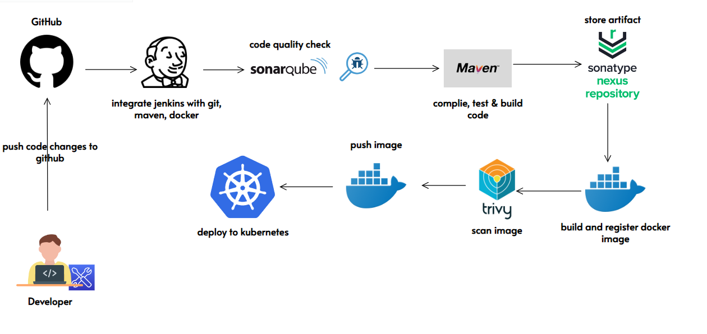

This project demonstrates the end-to-end automation of building, testing, and deploying a Java application using a robust CI/CD pipeline integrated with Jenkins. Every code commit is automatically validated for quality using SonarQube, followed by building the application with Maven and containerizing it with Docker. The generated Docker images are pushed to a container registry, ensuring version control and traceability.
Deployment is automated on a Kubernetes cluster, leveraging manifests and Helm charts for consistent and scalable deployments. Security scanning of Docker images is performed using Trivy to detect vulnerabilities early in the pipeline. Integration with Git enables seamless collaboration and ensures that all changes follow best practices for DevOps workflows. This approach drastically reduces manual intervention, accelerates delivery, and maintains high code quality and reliability in production environments.
